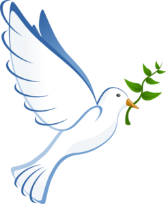

Salem Social Service Society
To proclaim liberty to the captives


 Salem Social Service Society Sustainable Development Goal
Salem Social Service Society Sustainable Development Goal
ROTTERN BUG
OVERALL OBJECTIVE OF THE PROJECT
Encouraging environment friendly life style in Salem Social Service Society Centre by adopting natural energy sources.
OBJECTIVES OF THE PROJECT
- To proactively take action to reduce global warming and environmental pollutions by shifting to greener source of power
- To facilitate the Salem Social Service Society to reduce the cost of energy through transferring into natural green energy and as an end result the poor women belong to poor Dalit and tribal families get financial support to embark in income generation programmes and help the needy youth and women through organizing various skill and capacity building trainings from our Social Service Society
- To sensitize the general public throughout the Diocese of Salem on the importance of natural solar energy and to encourage them to adopt environment friendly life style
PROJECT DESCRIPTION
- Salem Social Service Society strives to maintain its office and other filed offices as green as possible by developing green landscapes and planting or grow many fruits bearing and shadow trees. In the recent past concrete efforts are made to change the atmosphere in our office and field offices by introducing latest technology concerning natural energy. Such efforts will have the lasting impact in the life style of the staff, field workers, volunteers and the people in our office and field offices all those who are connected to our Social Service Society. Not only our offices but the surrounding villages will have the positive effect of the change.
- Thus, a project proposal “Towards sustainable green world” has been prepared to take active part in the process of promoting a sustainable development and a green world movement by installing Solar Energy System in our Salem Social Service Centre at Alagapuram in Salem. It is also planned to save some money through conversion from conventional electricity to solar energy and help the poor through expanding our social developmental activities in the remote places.
BENEFITS OF THE PROJECT
- The total built up area of the Salem Social Service Centre is 14,504. The ground floor is 7252 SFT and the first floor is 7252 SFT. The average electricity consumption of the Provincialate is 3000 units per month. We pay an average of INR 30,000 to the electricity department once in two months. If we install 20 KWp Solar panels, we can save (approximately EUR2.500 per year) whole expenditure of the electricity per year which we could use it for social development ministry in our operational areas. The proposed solar panels will be supplying electricity to the following lamps, electrical appliances and other devices in the Social Service Centre.
INSTALLATION OF SOLAR UNITS
- A technical team has been assigned to study and advice on power requirements, load availability, existing usage of power in the Social Service Society Center, cost benefit and feasibility of installation of solar energy system. Based on the study, Salem Social Service Society has proposed to implement the solar project as follows. It is proposed to install 20KWp on Grid Roof Top Solar Power Plant on the Salem Social Service Society Centre at Alagapuram.